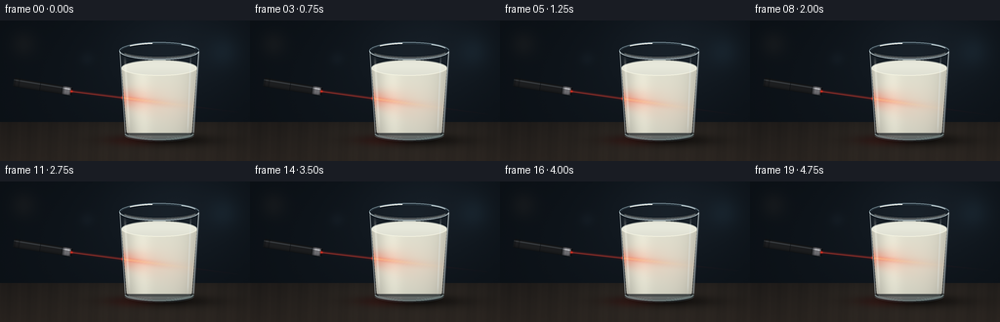
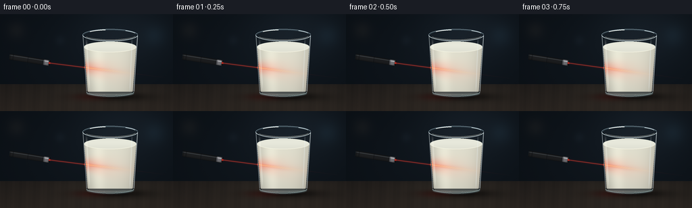

CODING AGENTS AS PIXEL WORLD MODELS
traex/GPT-6.1-Sol · phygen_046
点击播放 · 原生 RGB 像素
逐轮保存的候选
回放视频、检查图与代码变化。
每份候选均可单独播放。实际图片检查记录在下方工具轨迹中。
候选 01播放与检查图
点击播放 · 原生 RGB 像素


展开代码变化
--- 上一保存版本
+++ 本次保存版本
@@ -0,0 +1,218 @@
+"""Text-only procedural macro photograph animation; numpy/Pillow only."""
+from pathlib import Path
+import json
+import numpy as np
+from PIL import Image, ImageDraw, ImageFilter
+import artifact_io
+
+ROOT = Path(__file__).resolve().parent
+SPEC = json.loads((ROOT/'task_spec.json').read_text())
+W,H=SPEC['width'],SPEC['height']
+S=4
+w,h=W*S,H*S
+Y,X=np.mgrid[0:h,0:w].astype(np.float32)/S
+rng=np.random.default_rng(46)
+
+def ellipse(cx,cy,rx,ry):
+ return ((X-cx)/rx)**2+((Y-cy)/ry)**2<=1
+
+def paint(arr,mask,color,alpha=1):
+ a=np.asarray(alpha,dtype=np.float32)
+ if a.ndim==0: a=np.full((h,w),a,dtype=np.float32)
+ a=np.clip(a,0,1)*mask
+ c=np.asarray(color,dtype=np.float32)
+ arr[:]=arr*(1-a[...,None])+c*a[...,None]
+
+def overlay_strokes(arr,draw_fn,blur=0):
+ im=Image.new('RGBA',(w,h));d=ImageDraw.Draw(im)
+ draw_fn(d)
+ if blur: im=im.filter(ImageFilter.GaussianBlur(blur*S))
+ q=np.asarray(im,dtype=np.float32)
+ a=q[:,:,3:4]/255
+ arr[:]=arr*(1-a)+q[:,:,:3]*a
+
+def line(d,points,col,width=1):
+ d.line([(round(x*S),round(y*S)) for x,y in points],fill=col,width=max(1,round(width*S)))
+
+def arc(d,bbox,start,end,col,width=1):
+ d.arc(tuple(round(t*S) for t in bbox),start,end,fill=col,width=max(1,round(width*S)))
+
+# Static camera, shallow-focus charcoal studio and a dark walnut surface.
+vign=np.exp(-((X-146)/147)**2-((Y-71)/92)**2)
+base=np.zeros((h,w,3),np.float32)
+for k,c in enumerate((10,15,20)): base[:,:,k]=c+(5+k*1.5)*vign
+light=np.exp(-((X-185)/74)**2-((Y-25)/51)**2)
+base+=light[...,None]*np.array([8,10,12])
+# Indistinct out-of-focus studio lights, no competing scene objects.
+for cx,cy,rr,col in [(229,32,16,(5,9,11)),(24,24,13,(9,7,5)),(89,39,7,(4,5,6))]:
+ base+=np.exp(-((X-cx)**2+(Y-cy)**2)/(rr*rr))[...,None]*np.array(col)
+table=(Y>=104)
+dist=np.maximum(Y-104,0)
+grain=(np.sin(.29*X+.017*Y)+.48*np.sin(.91*X+.021*Y)+.2*np.sin(2.1*X+.07*Y))
+wood=np.empty_like(base)
+wood[:,:,0]=30+dist*.25+grain*1.3
+wood[:,:,1]=27+dist*.19+grain*1.0
+wood[:,:,2]=25+dist*.14+grain*.8
+paint(base,table,wood)
+# Grazing soft illumination and ground-contact shadow.
+base+= (np.exp(-((X-157)/90)**2-((Y-119)/24)**2)*table)[...,None]*np.array([11,10,8])
+shadow=np.exp(-((X-163)/43)**2-((Y-122)/5.0)**2)*.65
+base*=1-shadow[...,None]
+shadow2=np.exp(-((X-171)/67)**2-((Y-124)/8)**2)*.24
+base*=1-shadow2[...,None]
+# Small static texture, sampled at high resolution to avoid temporal crawling.
+noise=rng.normal(0,.32,(h,w)).astype(np.float32)
+base+=noise[...,None]
+
+# Tall subtly tapered clear tumbler; generous head space reveals real glass.
+cx=163.;yt=31.;yb=115.
+r=41.-5.5*np.clip((Y-yt)/(yb-yt),0,1)
+side=(Y>=yt)&(Y<=yb)&(np.abs(X-cx)<=r)
+glass=side|ellipse(cx,yb,35.5,8.0)|ellipse(cx,yt,41,9)
+# Background distortion as seen through glass, shadowing at both edges.
+u=(X-cx)/r
+coat=np.zeros_like(base)
+coat[:,:,0]=26+7*(1-u*u)
+coat[:,:,1]=34+9*(1-u*u)
+coat[:,:,2]=40+11*(1-u*u)
+paint(base,glass,coat,.26)
+
+# Dense, opaque whole milk. Its curved surface is below the drinking rim.
+liquid_y=48.5
+rm=38.7-5.2*np.clip((Y-liquid_y)/66.8,0,1)
+milkbody=(Y>=liquid_y)&(Y<=114)&(np.abs(X-cx)<=rm)
+milkbottom=ellipse(cx,114,33.5,5.5)
+milktop=ellipse(cx,liquid_y,38.7,8.1)
+milk=milkbody|milkbottom|milktop
+mu=np.clip((X-cx)/rm,-1,1)
+front=np.sqrt(np.maximum(0,1-mu*mu))
+shade=0.78+.18*front+.07*np.exp(-((mu+.5)/.28)**2)
+shade-=.08*np.clip((Y-90)/31,0,1)
+cream=np.stack([233*shade,232*shade,215*shade],axis=-1)
+# Large, nearly invisible convection variations remain realistic in opaque milk.
+soft=np.sin(X*.058+Y*.042)*np.sin(Y*.069-X*.011)
+cream+=soft[...,None]*1.5
+paint(base,milk,cream)
+# Surface elliptical disk, bright edge and a soft rear meniscus.
+surf=np.stack([225+7*np.exp(-((Y-46)/5)**2),226+7*np.exp(-((Y-46)/5)**2),213+7*np.exp(-((Y-46)/5)**2)],axis=-1)
+paint(base,milktop,surf)
+overlay_strokes(base,lambda d: (
+ arc(d,(124.3,40.4,201.7,56.6),181,355,(174,185,174,160),.55),
+ arc(d,(124.3,40.4,201.7,56.6),5,176,(253,252,232,180),.7)
+))
+# Glass base: substantial clear foot, reflected dark floor and bright curves.
+foot=ellipse(cx,117.4,35.6,6.4)&(Y>115)
+footcolor=np.stack([42+28*np.exp(-((Y-119)/1.5)**2),49+31*np.exp(-((Y-119)/1.5)**2),51+30*np.exp(-((Y-119)/1.5)**2)],axis=-1)
+paint(base,foot,footcolor,.82)
+
+# Laser pointer in foreground: solid metal body on a precise diagonal.
+p0=np.array([14.,63.]);p1=np.array([73.,72.5]);v=p1-p0;length=np.linalg.norm(v);v/=length
+PX=X-p0[0];PY=Y-p0[1]
+ax=PX*v[0]+PY*v[1];perp=-PX*v[1]+PY*v[0]
+rad=4.5
+body=(ax>=0)&(ax<=length)&(np.abs(perp)<=rad)
+profile=np.sqrt(np.maximum(0,1-(perp/rad)**2))
+metal=np.zeros_like(base)
+for k in range(3): metal[:,:,k]=12+17*profile+((k-1)*1.4)
+shine=np.exp(-((perp+2.3)/.60)**2)
+metal+=shine[...,None]*np.array([34,37,39])
+# Fine knurled grip and a satin label-free barrel.
+grip=(ax>7)&(ax<27)
+knurl=(.5+.5*np.sin(ax*5.9+perp*3.8))*(.5+.5*np.sin(ax*5.9-perp*3.8))
+metal+= (grip*knurl*6)[...,None]
+paint(base,body,metal)
+cap=(ax>=length-9)&(ax<=length)&(np.abs(perp)<=4.15)
+chrome=np.zeros_like(base)
+for k in range(3): chrome[:,:,k]=51+60*profile+100*np.exp(-((perp+2)/.65)**2)
+chrome[:,:,2]+=4
+paint(base,cap,chrome)
+for a in [1.1,5.4,27.4,length-9,length-7.8,length-1.5]:
+ ring=body&(abs(ax-a)<.25)
+ paint(base,ring,(9,12,15),.8)
+# The aperture is a dark oval looking toward the milk.
+ap=(abs(ax-length)<.8)&(abs(perp)<3.9)
+paint(base,ap,(6,8,10))
+
+# Glass highlights are added last so that the beam appears behind the wall.
+def glass_details(arr,t):
+ leftedge=cx-r
+ rightedge=cx+r
+ edge=(np.exp(-((X-leftedge-.65)/.42)**2)*.65+np.exp(-((X-rightedge+.5)/.5)**2)*.8)
+ edge*= (Y>32)&(Y<115)
+ paint(arr,np.ones((h,w),bool),(226,237,238),edge)
+ # Long broad softbox reflection down the left-facing curved glass.
+ streak=np.exp(-((X-(128.2+.059*(Y-45)))/1.18)**2)*.36
+ streak*=np.clip((Y-36)/12,0,1)*np.clip((116-Y)/14,0,1)
+ paint(arr,glass,(255,255,244),streak)
+ streak2=np.exp(-((X-(194.9-.041*(Y-45)))/.50)**2)*.47
+ streak2*=np.clip((Y-35)/10,0,1)*np.clip((117-Y)/10,0,1)
+ paint(arr,glass,(234,243,245),streak2)
+ def details(d):
+ arc(d,(122,22,204,40),180,355,(145,171,182,220),.75)
+ arc(d,(122,22,204,40),3,178,(214,230,233,235),1.0)
+ arc(d,(124,23.5,202,38),184,350,(76,101,114,170),.60)
+ arc(d,(124,23.5,202,38),18,156,(253,250,233,185),.50)
+ arc(d,(127.5,109.0,198.5,122.0),4,176,(174,196,193,205),1.0)
+ arc(d,(130,111,196,120),16,162,(224,232,220,170),.55)
+ arc(d,(123.2,22.8,202.8,39.2),221,260,(255,255,246,250),1.05)
+ arc(d,(123.2,22.8,202.8,39.2),305,338,(235,245,245,245),.85)
+ overlay_strokes(arr,details)
+
+# Time-continuous Brownian-scale scattering texture, never discrete snow particles.
+phases=rng.uniform(0,2*np.pi,7)
+frames=[]
+for i in range(SPEC['frames']):
+ t=i/SPEC['fps']
+ arr=base.copy()
+ # A near imperceptible hand-held angular sweep keeps the physical source fixed.
+ slope=.126+.018*np.sin(t*1.02)
+ by=72.5+slope*(X-73.)
+ dy=Y-by
+ entrance=125.7
+ inside=(X>=entrance)&milk
+ dx=np.maximum(X-entrance,0)
+ atten=np.exp(-dx/24.)
+ width=1.15+.072*dx
+ band=np.exp(-(dy/width)**2)
+ # Broad multiple-scattering halo: dense milk disperses the incoming ray.
+ diffuse=np.exp(-(dy/(8.1+.19*dx))**2)*np.exp(-dx/25.)
+ diffuse*=inside
+ flick=1+.025*np.sin(2.7*t)
+ paint(arr,inside,(255,104,79),diffuse*.55*flick)
+ # Subtle branching refractive patterns within the luminous volume.
+ weave=np.zeros((h,w),np.float32)
+ for k in range(6):
+ track=(k-2.5)*.63*np.sqrt(dx+1)+.65*np.sin(dx*.13+phases[k]+t*.37)
+ weave+=np.exp(-((dy-track)/(.4+.012*dx))**2)
+ weave=np.minimum(weave,2)*np.exp(-dx/36)*inside
+ paint(arr,inside,(255,188,151),weave*.065*diffuse)
+ mottling=.91+.065*np.sin(X*1.48+Y*1.73+np.sin(t*.9))+.025*np.sin(X*3.2-Y*.85-t*.7)
+ # A strong straight beam rapidly loses intensity rather than crossing opaque milk unchanged.
+ core=np.exp(-(dy/(.42+.012*dx))**2)*atten*inside
+ paint(arr,inside,(255,116,74),band*atten*.72*mottling)
+ paint(arr,inside,(255,224,162),core*.84)
+ spot=np.exp(-((X-entrance)/2.2)**2-(dy/3.6)**2)*milk
+ paint(arr,milk,(255,185,132),spot*.68)
+ # A narrow incident beam, its colored bloom and glowing red emitter.
+ air=(X>=73)&(X<entrance)
+ halo=np.exp(-(dy/1.4)**2)*air
+ arr+=halo[...,None]*np.array([50,4,2])
+ beam=np.exp(-(dy/.23)**2)*air
+ paint(arr,air,(255,79,56),beam*.95)
+ emitter=np.exp(-((X-73)/1.2)**2-((Y-72.5)/1.2)**2)
+ arr+=emitter[...,None]*np.array([210,24,9])
+ # Extremely weak residual light at the far edge; most energy is scattered.
+ outgoing=(X>199)&(X<244)
+ tail=np.exp(-((Y-by)/.43)**2)*np.exp(-(X-199)/27)*outgoing
+ arr+=tail[...,None]*np.array([16,1.2,.6])
+ # Scarlet spill onto the walnut surface, with broadened glossy reflection.
+ spill=np.exp(-((X-135)/25)**2-((Y-123)/5.5)**2)*table
+ arr+=spill[...,None]*np.array([19,1.0,.5])
+ glass_details(arr,t)
+ # Fine red edge reflection at the point where the laser enters the glass.
+ hot=np.exp(-((X-124.8)/.60)**2-(dy/2.2)**2)
+ arr+=hot[...,None]*np.array([115,23,8])
+ frame=Image.fromarray(np.uint8(np.clip(arr,0,255))).resize((W,H),Image.Resampling.LANCZOS)
+ frames.append(np.asarray(frame))
+artifact_io.save(np.stack(frames),ROOT)
+print(f'Saved {len(frames)} RGB frames ({W}x{H}) at {SPEC["fps"]} fps.')
可观测工具轨迹
实际执行的命令与返回图片。
命令 1exit 0
/bin/bash -lc 'ls -la; cat prompt.txt; cat GENERATION_RULES.md; cat task_spec.json'
命令 2exit 0
/bin/bash -lc "cat artifact_io.py; python - <<'PY'
import PIL, numpy
print('PIL',PIL.__version__)
PY"命令 3exit 0
/bin/bash -lc "cat > generate.py <<'PY'
\"\"\"Text-only procedural macro photograph animation; numpy/Pillow only.\"\"\"
from pathlib import Path
import json
import numpy as np
from PIL import Image, ImageDraw, ImageFilter
import artifact_io
ROOT = Path(__file__).resolve().parent
SPEC = json.loads((ROOT/'task_spec.json').read_text())
W,H=SPEC['width'],SPEC['height']
S=4
w,h=W*S,H*S
Y,X=np.mgrid[0:h,0:w].astype(np.float32)/S
rng=np.random.default_rng(46)
def ellipse(cx,cy,rx,ry):
return ((X-cx)/rx)**2+((Y-cy)/ry)**2<=1
def paint(arr,mask,color,alpha=1):
a=np.asarray(alpha,dtype=np.float32)
if a.ndim==0: a=np.full((h,w),a,dtype=np.float32)
a=np.clip(a,0,1)*mask
c=np.asarray(color,dtype=np.float32)
arr[:]=arr*(1-a[...,None])+c*a[...,None]
def overlay_strokes(arr,draw_fn,blur=0):
im=Image.new('RGBA',(w,h));d=ImageDraw.Draw(im)
draw_fn(d)
if blur: im=im.filter(ImageFilter.GaussianBlur(blur*S))
q=np.asarray(im,dtype=np.float32)
a=q[:,:,3:4]/255
arr[:]=arr*(1-a)+q[:,:,:3]*a
def line(d,points,col,width=1):
d.line([(round(x*S),round(y*S)) for x,y in points],fill=col,width=max(1,round(width*S)))
def arc(d,bbox,start,end,col,width=1):
d.arc(tuple(round(t*S) for t in bbox),start,end,fill=col,width=max(1,round(width*S)))
# Static camera, shallow-focus charcoal studio and a dark walnut surface.
vign=np.exp(-((X-146)/147)**2-((Y-71)/92)**2)
base=np.zeros((h,w,3),np.float32)
for k,c in enumerate((10,15,20)): base[:,:,k]=c+(5+k*1.5)*vign
light=np.exp(-((X-185)/74)**2-((Y-25)/51)**2)
base+=light[...,None]*np.array([8,10,12])
# Indistinct out-of-focus studio lights, no competing scene objects.
for cx,cy,rr,col in [(229,32,16,(5,9,11)),(24,24,13,(9,7,5)),(89,39,7,(4,5,6))]:
base+=np.exp(-((X-cx)**2+(Y-cy)**2)/(rr*rr))[...,None]*np.array(col)
table=(Y>=104)
dist=np.maximum(Y-104,0)
grain=(np.sin(.29*X+.017*Y)+.48*np.sin(.91*X+.021*Y)+.2*np.sin(2.1*X+.07*Y))
wood=np.empty_like(base)
wood[:,:,0]=30+dist*.25+grain*1.3
wood[:,:,1]=27+dist*.19+grain*1.0
wood[:,:,2]=25+dist*.14+grain*.8
paint(base,table,wood)
# Grazing soft illumination and ground-contact shadow.
base+= (np.exp(-((X-157)/90)**2-((Y-119)/24)**2)*table)[...,None]*np.array([11,10,8])
shadow=np.exp(-((X-163)/43)**2-((Y-122)/5.0)**2)*.65
base*=1-shadow[...,None]
shadow2=np.exp(-((X-171)/67)**2-((Y-124)/8)**2)*.24
base*=1-shadow2[...,None]
# Small static texture, sampled at high resolution to avoid temporal crawling.
noise=rng.normal(0,.32,(h,w)).astype(np.float32)
base+=noise[...,None]
# Tall subtly tapered clear tumbler; generous head space reveals real glass.
cx=163.;yt=31.;yb=115.
r=41.-5.5*np.clip((Y-yt)/(yb-yt),0,1)
side=(Y>=yt)&(Y<=yb)&(np.abs(X-cx)<=r)
glass=side|ellipse(cx,yb,35.5,8.0)|ellipse(cx,yt,41,9)
# Background distortion as seen through glass, shadowing at both edges.
u=(X-cx)/r
coat=np.zeros_like(base)
coat[:,:,0]=26+7*(1-u*u)
coat[:,:,1]=34+9*(1-u*u)
coat[:,:,2]=40+11*(1-u*u)
paint(base,glass,coat,.26)
# Dense, opaque whole milk. Its curved surface is below the drinking rim.
liquid_y=48.5
rm=38.7-5.2*np.clip((Y-liquid_y)/66.8,0,1)
milkbody=(Y>=liquid_y)&(Y<=114)&(np.abs(X-cx)<=rm)
milkbottom=ellipse(cx,114,33.5,5.5)
milktop=ellipse(cx,liquid_y,38.7,8.1)
milk=milkbody|milkbottom|milktop
mu=np.clip((X-cx)/rm,-1,1)
front=np.sqrt(np.maximum(0,1-mu*mu))
shade=0.78+.18*front+.07*np.exp(-((mu+.5)/.28)**2)
shade-=.08*np.clip((Y-90)/31,0,1)
cream=np.stack([233*shade,232*shade,215*shade],axis=-1)
# Large, nearly invisible convection variations remain realistic in opaque milk.
soft=np.sin(X*.058+Y*.042)*np.sin(Y*.069-X*.011)
cream+=soft[...,None]*1.5
paint(base,milk,cream)
# Surface elliptical disk, bright edge and a soft rear meniscus.
surf=np.stack([225+7*np.exp(-((Y-46)/5)**2),226+7*np.exp(-((Y-46)/5)**2),213+7*np.exp(-((Y-46)/5)**2)],axis=-1)
paint(base,milktop,surf)
overlay_strokes(base,lambda d: (
arc(d,(124.3,40.4,201.7,56.6),181,355,(174,185,174,160),.55),
arc(d,(124.3,40.4,201.7,56.6),5,176,(253,252,232,180),.7)
))
# Glass base: substantial clear foot, reflected dark floor and bright curves.
foot=ellipse(cx,117.4,35.6,6.4)&(Y>115)
footcolor=np.stack([42+28*np.exp(-((Y-119)/1.5)**2),49+31*np.exp(-((Y-119)/1.5)**2),51+30*np.exp(-((Y-119)/1.5)**2)],axis=-1)
paint(base,foot,footcolor,.82)
# Laser pointer in foreground: solid metal body on a precise diagonal.
p0=np.array([14.,63.]);p1=np.array([73.,72.5]);v=p1-p0;length=np.linalg.norm(v);v/=length
PX=X-p0[0];PY=Y-p0[1]
ax=PX*v[0]+PY*v[1];perp=-PX*v[1]+PY*v[0]
rad=4.5
body=(ax>=0)&(ax<=length)&(np.abs(perp)<=rad)
profile=np.sqrt(np.maximum(0,1-(perp/rad)**2))
metal=np.zeros_like(base)
for k in range(3): metal[:,:,k]=12+17*profile+((k-1)*1.4)
shine=np.exp(-((perp+2.3)/.60)**2)
metal+=shine[...,None]*np.array([34,37,39])
# Fine knurled grip and a satin label-free barrel.
grip=(ax>7)&(ax<27)
knurl=(.5+.5*np.sin(ax*5.9+perp*3.8))*(.5+.5*np.sin(ax*5.9-perp*3.8))
metal+= (grip*knurl*6)[...,None]
paint(base,body,metal)
cap=(ax>=length-9)&(ax<=length)&(np.abs(perp)<=4.15)
chrome=np.zeros_like(base)
for k in range(3): chrome[:,:,k]=51+60*profile+100*np.exp(-((perp+2)/.65)**2)
chrome[:,:,2]+=4
paint(base,cap,chrome)
for a in [1.1,5.4,27.4,length-9,length-7.8,length-1.5]:
ring=body&(abs(ax-a)<.25)
paint(base,ring,(9,12,15),.8)
# The aperture is a dark oval looking toward the milk.
ap=(abs(ax-length)<.8)&(abs(perp)<3.9)
paint(base,ap,(6,8,10))
# Glass highlights are added last so that the beam appears behind the wall.
def glass_details(arr,t):
leftedge=cx-r
rightedge=cx+r
edge=(np.exp(-((X-leftedge-.65)/.42)**2)*.65+np.exp(-((X-rightedge+.5)/.5)**2)*.8)
edge*= (Y>32)&(Y<115)
paint(arr,np.ones((h,w),bool),(226,237,238),edge)
# Long broad softbox reflection down the left-facing curved glass.
streak=np.exp(-((X-(128.2+.059*(Y-45)))/1.18)**2)*.36
streak*=np.clip((Y-36)/12,0,1)*np.clip((116-Y)/14,0,1)
paint(arr,glass,(255,255,244),streak)
streak2=np.exp(-((X-(194.9-.041*(Y-45)))/.50)**2)*.47
streak2*=np.clip((Y-35)/10,0,1)*np.clip((117-Y)/10,0,1)
paint(arr,glass,(234,243,245),streak2)
def details(d):
arc(d,(122,22,204,40),180,355,(145,171,182,220),.75)
arc(d,(122,22,204,40),3,178,(214,230,233,235),1.0)
arc(d,(124,23.5,202,38),184,350,(76,101,114,170),.60)
arc(d,(124,23.5,202,38),18,156,(253,250,233,185),.50)
arc(d,(127.5,109.0,198.5,122.0),4,176,(174,196,193,205),1.0)
arc(d,(130,111,196,120),16,162,(224,232,220,170),.55)
arc(d,(123.2,22.8,202.8,39.2),221,260,(255,255,246,250),1.05)
arc(d,(123.2,22.8,202.8,39.2),305,338,(235,245,245,245),.85)
overlay_strokes(arr,details)
# Time-continuous Brownian-scale scattering texture, never discrete snow particles.
phases=rng.uniform(0,2*np.pi,7)
frames=[]
for i in range(SPEC['frames']):
t=i/SPEC['fps']
arr=base.copy()
# A near imperceptible hand-held angular sweep keeps the physical source fixed.
slope=.126+.018*np.sin(t*1.02)
by=72.5+slope*(X-73.)
dy=Y-by
entrance=125.7
inside=(X>=entrance)&milk
dx=np.maximum(X-entrance,0)
atten=np.exp(-dx/24.)
width=1.15+.072*dx
band=np.exp(-(dy/width)**2)
# Broad multiple-scattering halo: dense milk disperses the incoming ray.
diffuse=np.exp(-(dy/(8.1+.19*dx))**2)*np.exp(-dx/25.)
diffuse*=inside
flick=1+.025*np.sin(2.7*t)
paint(arr,inside,(255,104,79),diffuse*.55*flick)
# Subtle branching refractive patterns within the luminous volume.
weave=np.zeros((h,w),np.float32)
for k in range(6):
track=(k-2.5)*.63*np.sqrt(dx+1)+.65*np.sin(dx*.13+phases[k]+t*.37)
weave+=np.exp(-((dy-track)/(.4+.012*dx))**2)
weave=np.minimum(weave,2)*np.exp(-dx/36)*inside
paint(arr,inside,(255,188,151),weave*.065*diffuse)
mottling=.91+.065*np.sin(X*1.48+Y*1.73+np.sin(t*.9))+.025*np.sin(X*3.2-Y*.85-t*.7)
# A strong straight beam rapidly loses intensity rather than crossing opaque milk unchanged.
core=np.exp(-(dy/(.42+.012*dx))**2)*atten*inside
paint(arr,inside,(255,116,74),band*atten*.72*mottling)
paint(arr,inside,(255,224,162),core*.84)
spot=np.exp(-((X-entrance)/2.2)**2-(dy/3.6)**2)*milk
paint(arr,milk,(255,185,132),spot*.68)
# A narrow incident beam, its colored bloom and glowing red emitter.
air=(X>=73)&(X<entrance)
halo=np.exp(-(dy/1.4)**2)*air
arr+=halo[...,None]*np.array([50,4,2])
beam=np.exp(-(dy/.23)**2)*air
paint(arr,air,(255,79,56),beam*.95)
emitter=np.exp(-((X-73)/1.2)**2-((Y-72.5)/1.2)**2)
arr+=emitter[...,None]*np.array([210,24,9])
# Extremely weak residual light at the far edge; most energy is scattered.
outgoing=(X>199)&(X<244)
tail=np.exp(-((Y-by)/.43)**2)*np.exp(-(X-199)/27)*outgoing
arr+=tail[...,None]*np.array([16,1.2,.6])
# Scarlet spill onto the walnut surface, with broadened glossy reflection.
spill=np.exp(-((X-135)/25)**2-((Y-123)/5.5)**2)*table
arr+=spill[...,None]*np.array([19,1.0,.5])
glass_details(arr,t)
# Fine red edge reflection at the point where the laser enters the glass.
hot=np.exp(-((X-124.8)/.60)**2-(dy/2.2)**2)
arr+=hot[...,None]*np.array([115,23,8])
frame=Image.fromarray(np.uint8(np.clip(arr,0,255))).resize((W,H),Image.Resampling.LANCZOS)
frames.append(np.asarray(frame))
artifact_io.save(np.stack(frames),ROOT)
print(f'Saved {len(frames)} RGB frames ({W}x{H}) at {SPEC[\"fps\"]} fps.')
PY
python generate.py"命令 4exit 2
/bin/bash -lc "python - <<'PY'
from pathlib import Path
import numpy as np
from PIL import Image
p=Path('.')
a=np.stack([np.asarray(Image.open(p/'frames'/f'{i:02d}.png')) for i in range(20)])
assert a.shape==(20,144,256,3) and a.dtype==np.uint8
assert np.load('pixels.npz')['pixels'].shape==(144,256,20)
assert (p/'index.html').is_file()
print('Verified:',a.shape,a.dtype,'; mean frame-to-frame change:',np.abs(np.diff(a.astype(float),axis=0)).mean())
PY
if command -v ffmpeg >/dev/null; then ffmpeg -v error -y -framerate 4 -i frames/%02d.png -c:v libx264 -crf 17 -pix_fmt yuv420p -movflags +faststart video.mp4; fi
ls -lh pixels.npz index.html video.mp4 2>/dev/null"保存候选 1 份；完成命令 4 次；可验证图片返回 0 张。原始 API 响应与完整日志保留在本地。